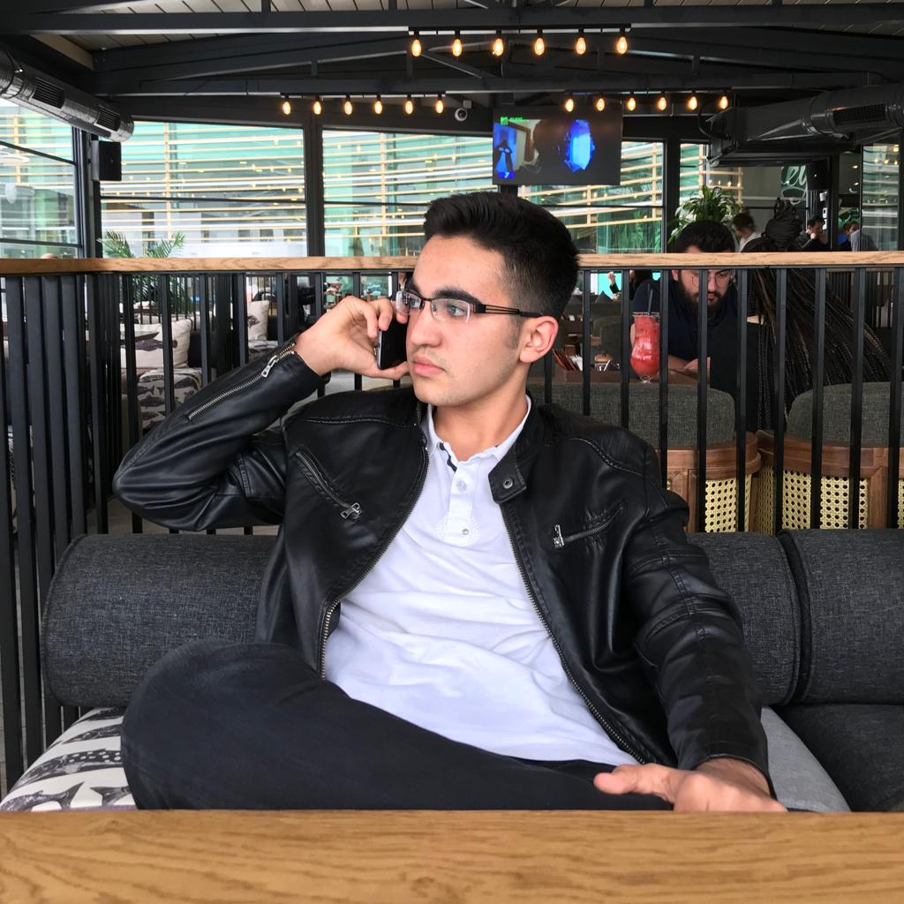

Yasin Soylu
Kısa Bilgi
23 Nisan 1999 tarihinde Ankarada doğdu..İlk ve orta öğretim hayatını Kardelen Okulunda tamamladı.Lise eğitimini ise Muradiye Fen Lisesinde tamamlamıştır.
2017 yılında girmiş olduğu YGS-LYS sınavlarındaki başarı sıralaması ile şu anda Gazi Üniversitesinde Bilgisayar Mühendisliği bölümünde 1.sınıf öğrencisidir.
Detaylı bilgi için hakkımda kısmına gidiniz.
İletişim İçin mail atın